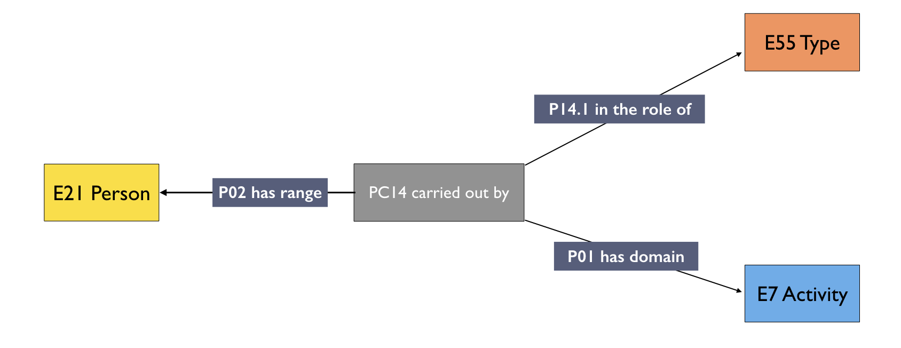

General Pattern¶
Introduction
The document outlines modelling choices in relation to attributive patterns used across all of the CIDOC-CRM ontology, such as appellations, notes or roles. The modelling of such type of statements are going to be described in this section.
The modelling choices are recorded as generalisable patterns. Each pattern is made explicit using an example which it is both encoded in RDF using Turtle and presented, below each codebox, in a graphical form.
All the prefix used within the document can be found on http://prefix.cc/.
Type¶
The class E55 Type denote concepts (not names, for those see Appellation), preferably from a controlled source, used to classify a thing. The modelling of a Type is a pretty straightforward one:
E1 CRM Entity → P2 has type → E55 Type
The string of characters used in the type is modelled as:
E1 CRM Entity → P2 has type → E55 Type → rdfs:Label → rdfs:Literal
In the example below, we used a term from the Getty Art and Architecture Thesaurus to classify the object "work/7761" as a type of painting paintings (visual works) in AAT.
Codebox 1 . Type. Click here to comment the modelling.
Appellation¶
An appellation is a sign, usually in the form of a string of characters, used for referencing an entity (e.g. a person, an object, a place, an event). More appellations can refer, in the same language, to the same entity, and can also be tied to a specific time interval.
A simple appellation can be modelled in CRM as
E1 CRM Entity → P1 is identified by → E41 Appellation
While the string of characters used in the appellation is modelled as:
E1 CRM Entity → P1 is identified by → E41 Appellation → rdfs:Label → rdfs:Literal
A type, preferably from a controlled vocabulary, can be used to define the diverse appellations which we assign to an entity.
E1 CRM Entity → P1 is identified by → E41 Appellation → P2 has type → E55 Type
In our case, we chose to use the Getty Art and Architecture Thesaurus which can provide us with diverse qualifiers. An example is in the Codebox 1, where we modelled a person surname, name and full name using the URI of the thesaurus as E55 Type. While in the example we used the entity E21 Person, the same pattern can be used across all the entities expressed in CIDOC-CRM.
Codebox 2 . Appellation. Click here to comment the modelling.
The exact same pattern can be used to model preferred and not-preferred names. As before, the use of a controlled vocabulary like the Getty Art and Architecture Thesaurus (see the preferred and not-preferred terms) would help us normalise this field.
Identifier¶
An identifier is a string assigned to an entity that uniquely identifies it in a system (usually, a digital system). Being a subclass of E41 Appellation, the modelling of the identifier in CRM is quite similar:
E1 CRM Entity → P1 is identified by → E42 Identifier
While the string of characters used in the identifier is modelled as:
E1 CRM Entity → P1 is identified by → E42 Identifier → rdfs:Label → rdfs:Literal
As seen in the Appellation a E55 Type, preferably from a controlled vocabulary, can be used to define the diverse appellations. We will not repeat the modelling here because it would be redundant.
In the example below, we used the entity E21 Person, but the same pattern can be used across all the entities expressed in CIDOC-CRM.
Codebox 3 . Identifier. Click here to comment the modelling.
Roles¶
The type of agency within an activity is an ontologically complicated matter, and its representations within the RDF version of CIDOC-CRM has been a long object of debate in the past. The problem lies with the fact that CIDOC-CRM uses the ".1" property to qualify the type of agency in a relationship (see Figure 1 below). While this approach would flawlessly work in a property graph, or in other Knowledge Representation Systems, it does not translate entirely well in RDF (for more information see the debate on reification).
 Figure 1. Property Graph.
Figure 1. Property Graph.
In order to resolve the issue, the RDF version of CIDOC-CRM uses an n-ary relationship, therefore, representing the relationship as a class rather than a property, and then assign to this class an E55 Type. It is easier than it seems. Figure 2 below shows a graphical representation of what we mean
 Figure 2. N-Ary relationship.
{kind=link}
This makes easier to clarify the type of agency within an activity. In order to demonstrate the modelling we will use one example of ".1" property, "P14.1 carried out", but their modelling is substantially the same (it changes, of course, the type of properties that can be used).
PC14 Carried Out By → P02 has range → E21 Person
PC14 Carried Out By → P01 has domain → E7 Activity
PC14 Carried Out By → P14.1 in the role of → E55 Type
We heavily used this construct to define the curation activities, as in the codebox below.
Codebox 4. Roles in an activity. Click here to comment the modelling.
As it can be seen in the Codebox above, we used the PC properties which are not expressed in the RDF version of CIDOC-CRM, but they require an extension called "CRM-PC" available in the resource page of the official website.
Notes¶
Notes are one of the most widespread and essential parts of a KOS. Their modelling could be straightforward, with a simple:
E1 CRM Entity → P3 has note → rdfs:literal
However, sometimes it is essential to make explicit the type of note we are referring too. In order to do so, we would have again to use the n-ary relationship construct (see roles above) with the CRM-PC extension. In this case, the modelling would be
PC3_has_note → crm:P3.1_has_type → E55 Type
PC3_has_note → crm:P03_has_range_literal → rdfs:Literal
We used this construct to qualify diverse notes which had to be interpreted differently by the machine, therefore the example below here is a bit cryptic, but still quite explicative.
Codebox 5. Notes. Click here to comment the modelling.